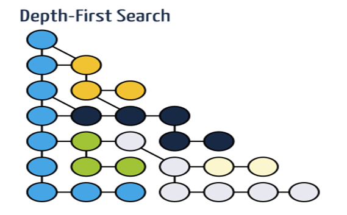

Uma das tarefas mais básicas sobre grafos é como atravessar todos os seus vértices. Como nas árvores existem várias alternativas para atravessar um grafo.
Esta página é sobre a pesquisa em profundidade (em inglês, depth-first search, dfs) e pesquisa em largura (breadth-first search, bfs).
A ideia é simples: escolhe-se um vértice (a raiz) e avança-se por um caminho qualquer. Há medida que se visitam os vértices temos de o indicar numa estrutura auxiliar (para evitar entrarmos em ciclos infinitos). Quando chegamos a um beco sem saída (todos os vértices vizinhos foram já visitados) volta-se para trás via backtracking e continua-se num caminho ainda com nós por visitar. Quando voltamos à raiz e todos os seus vizinhos foram visitados, a travessia terminou.
A imagem seguinte mostra os vários caminhos percorridos no dfs, onde cada backtracking é indicado pela mudança da cor:

O mecanismo de backtracking pode ser efectuado usando uma Stack: armazena-se na pilha os vizinhos do vértice actual e segue-se caminho. Quando chegados a um beco sem saída, tira-se o elemento do topo da pilha e continua-se (se a pilha estiver vazia, a travessia terminou).
A complexidade do dfs é O(V+E), sendo V o número de vértices e E o número de arestas (edges).
O método que executa o dfs na classe GraphMatrix:
/**
* Depth-first search from a given node
* @param node The node from which to start
* @complexity O(V + E)
* @requires a directed graph
* @return an array with the indexes of the dfs
*/
public int[] dfs(int node) {
Stack<Integer> stack = new Stack<Integer>(); // for backtracking
ArrayList<Integer> l = new ArrayList<Integer>(); // contains the visiting order
boolean[] visited = new boolean[size]; // false means not visited
stack.push(node);
while(!stack.isEmpty()) {
int current = stack.pop();
if (visited[current])
continue;
visited[current] = true;
l.add(current);
for(int next : sucessors(current))
if (!visited[next])
stack.push(next);
}
return list2array(l);
}
Um problema que utiliza o dfs na solução é o UVa 11902. Veremos que o dfs está subjacente a muitos outros algoritmos sobre grafos, tornando-o um algoritmo muito importante para se perceber bem e saber usar.
A pesquisa em largura, bfs, é muito semelhante ao dfs. A principal diferença é que os vértices 'irmãos' são percorridos antes do vértices 'filhos'.
Esta imagem mostra a diferença em termos visuais:
A forma de implementar o bfs é utilizar uma fila de espera (queue) em vez de uma pilha. Desta forma implementamos um sistema FIFO que permite que os vértices vizinhos da raiz sejam visitados em primeiro lugar.
/**
* Breath-first search from a given node
* @param node The node from which to start
* @complexity O(V + E)
* @requires a directed graph
* @return an array with the indexes of the bfs
*/
public int[] bfs(int node) {
Queue<Integer> queue = new LinkedList<Integer>();
ArrayList<Integer> l = new ArrayList<Integer>();
boolean[] visited = new boolean[size];
queue.add(node);
while(!queue.isEmpty()) {
int current = queue.poll();
if (visited[current])
continue;
visited[current] = true;
l.add(current);
for(int next : sucessors(current))
if (!visited[next])
queue.add(next);
}
return list2array(l);
}
Esta é uma lista de problemas onde o bfs pode ser usado.